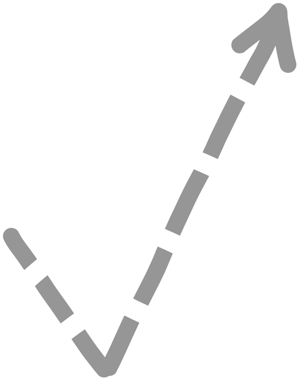

Sending Emoticons
Method 1: Shape Tracing
Trace the shape shown under the emoticon
Start
1. Like
no emoticon detected
Finish
Clear
<< Prev
Next >>

Ready to move on?
×
By clicking Ready, you confirm that you have learned this method of sending emoticons and are ready to use them in the study trial.